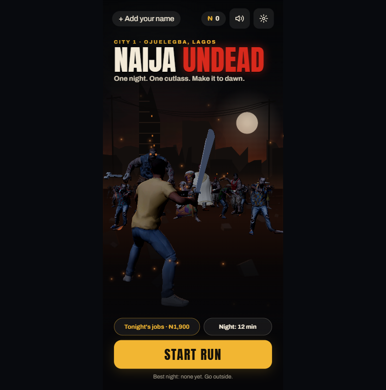

← Back to all 12 projects
Live · Playable
Naija Undead.
A mobile-first 3D WebGL Lagos zombie survival game built end-to-end with an AI-accelerated character & audio pipeline.

Live 3D WebGL scene from naijaundead.fun — City 1: Ojuelegba, Lagos.
The Challenge
Traditional 3D action games take full studio teams months to prototype and launch. Naija Undead proves how AI-directed character and audio workflows can ship a playable 3D survival game straight to the web.
What I Built & Directed
Set in City 1: Ojuelegba, Lagos, players wield a cutlass to survive 12-minute nights against localized undead archetypes—Traffic Hawker, Mama Put, Conductor, Agbero, Mechanic, and Politician—while earning nightly Naira bounties.
Key Proof & Outcomes
- Directed and shipped live to naijaundead.fun with mobile-first 3D WebGL rendering.
- Executed full AI-generated 3D character, audio, and X viral launch pipeline.
- Memorable cultural worldbuilding with nightly bounty jobs (₦1,900+) and persistent survival bests.
Core Features & Architecture
- Real-time 3D WebGL combat in a stylized night-time Ojuelegba, Lagos skyline
- Original Nigerian enemy archetypes: Traffic Hawker, Mama Put, Conductor, Agbero, Mechanic & Politician
- 12-minute survival runs with nightly Naira job bounties and personal-best tracking
- Mobile-first vertical viewport with responsive sound and display controls